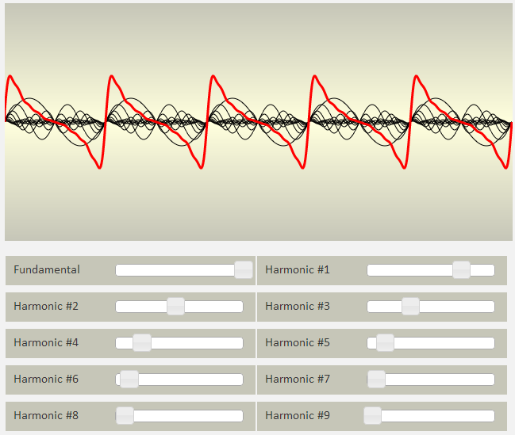
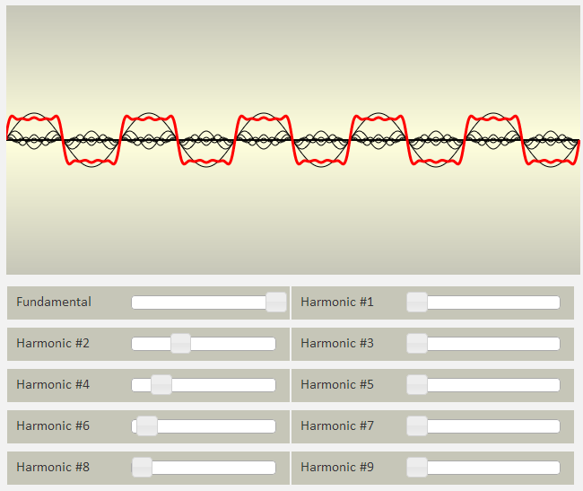

Move the sliders to change the sound. More detailed information is below.
This is just a simple little app that combines a visual representation of additive audio synthesis along with real audio output.
The black lines on the graph are fundamental and harmonic sine waves. The red line is the summed result of the fundamental and all the harmonics together. The app uses a fundamental frequency of 400 Hz with harmonics at 800 Hz, 1200 Hz, 1600 Hz, and so on.
The audio is delivered plugin-free with JavaScript through your browser's audio API and is produced with audiolib.js.
Arranging the harmonic sliders in an exponentially decreasing way will produce a near sawtooth wave:

Arranging the even-numbered harmonics in a similar manner (while zeroing-out the odd-numbered harmonics) will produce a near square wave:
